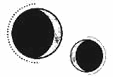

CAPÍTULO 47
Ener 1787
Una semana después, cuando Helena regresó al Reducto, descubrió una especie de tela gruesa que cubría todo el suelo del módulo, arrugándose a los pies de la puerta.
Ferron ya estaba allí. Se había quitado la capa y el abrigo, vestía con ropa informal y se había arremangado hasta los codos. Helena se quedó inmóvil al verlo.
Los norteños eran tan pálidos que parecían resplandecer en invierno, mientras que la piel de Helena se tornaba macilenta y enfermiza en cuanto escaseaba el sol. Echaba tanto de menos el sol del Sur que, en ocasiones, hasta su piel lo anhelaba.
—No voy a entrenarte para el campo de batalla —afirmó Kaine—. El objetivo de todo esto es asegurarme de que tienes las habilidades mínimas para sobrevivir. A estas alturas, eres capaz de defenderte de los necrómatas, siempre que no sean demasiados, pero, si te encuentras con un inmarcesible, te perseguirá. Y será una suerte si se limita a matarte.
La chica asintió.
—Tus reflejos han mejorado, pero una pelea de verdad es algo distinto. No hay reglas; es contacto físico cercano y sucio. Cada segundo que tardes en atacar o colocarte en posición juega en tu contra. El tiempo nunca estará de tu lado. Tu única ventaja es que van a subestimarte, pero solo la tendrás una vez, en el primer golpe.
¿Por qué siempre que mascullaba algo vagamente parecido a un cumplido venía acompañado de un puñado de críticas?
—De acuerdo.
Kaine la miró de soslayo.
—Careces de complexión de combate o de fuerza, pero puedes usar eso a tu favor. Nadie te considerará una amenaza. Lo más probable es que primero manden a los necrómatas, pero, en cuanto reconozcan tus habilidades, correrás un grave peligro. —La miró de arriba abajo—. Hoy no me apetece recibir una puñalada, así que usaremos dagas de práctica.
Cogió un par de la mesa y se las lanzó. Helena las atrapó a duras penas. Eran ligeras, prácticamente del mismo peso y tamaño que las suyas, pero estaban elaboradas de madera. Apretó la empuñadura y le resultó extraño no poder usar la resonancia.
—Tu objetivo aquí es escapar y dar tres golpes en la pared; si lo logras, lo consideraremos como una huida. O también establecer un canal de resonancia mediante el contacto: eso contará como un golpe. Ya sabes qué hacer si lo consigues.
Parecía demasiado simple, aunque era la primera vez que luchaban en serio, así que quizá solo quería empezar por algo fácil.
—Bien, imagínate que te encuentras en ese lodazal que tanto te gusta. Es un terreno difícil y, cuando estás de rodillas en el barro cogiendo ranas o vete a saber qué, unos necrómatas te descubren. Como no tienes un compañero de combate que te cubra las espaldas, mientras estás luchando con ellos, no te das cuenta de que se acerca un inmarcesible. Él ya sabe que eres una vivemante y está en guardia. Quiere entregarte con vida porque recibirá una recompensa. —Kaine se acercó hasta que sus cuerpos se rozaron—. ¿Qué harías?
Helena apuntó al pecho, pero, en vez de esquivar el golpe o luchar, Kaine le dio en la muñeca con el canto de la mano. Fue un manotazo tan rápido que se le escapó la daga de madera. Él la atrapó antes de que cayera al suelo.
Helena retrocedió e intentó adoptar una mejor posición defensiva, pero la tela del suelo la entorpecía. Un terreno difícil. La mano de Kaine le sujetó la muñeca y la empujó hacia atrás.
Adelantó la mano que empuñaba la daga y puso el arma contra su garganta. Ella intentó bloquearlo con la otra mano, pero Kaine agarró la empuñadura por detrás y se la arrancó de los dedos. La dejó caer al suelo.
—No han pasado ni cinco segundos y ya has perdido las dos dagas —dijo, atrayéndola hacia sí de manera que su aliento le hizo cosquillas en la piel.
Helena intentó darle un empujón. Solo necesitaba establecer un punto de contacto para emplear la resonancia. Al infierno las dagas.
Sin embargo, la mano izquierda de Kaine, que hacía un instante Helena habría jurado que sostenía una daga, de repente estaba vacía y se cerró sobre su muñeca antes de que pudiera rozarlo siquiera. Trató de zafarse, pero él la sujetaba de forma implacable.
—Ahora tienes las dos manos atadas —le explicó como si no se hubiera dado cuenta. Helena se echó hacia atrás para intentar huir.
—Te voy a dar un consejo —comentó con voz tranquila. Ni siquiera parpadeó mientras ella empleaba toda su fuerza y peso para liberarse—. Nunca dejes las muñecas al alcance de nadie. Si te cojo de las muñecas, te tengo totalmente controlada. Me resulta mucho más fácil sujetarte que a ti escapar. Lo mismo ocurre con los pies. No des patadas por encima de la rodilla. Si te atrapan por el tobillo, estarás en el suelo en un abrir y cerrar de ojos. La mayoría de los inmarcesibles pertenecen a los gremios, es decir, pesan el doble que tú. Incluso si consigues matarlos, podrías quedar atrapada. Es mucho más eficaz dar pisotones o rodillazos, sobre todo pisotones, porque ahí empleas todo tu peso, no solo tu fuerza. Da un buen pisotón y apunta con el pie a los tobillos o a las rodillas. Lo importante es dejarlos inutilizados. Si les dislocas una rodilla, tardarán más en regenerarse que con una puñalada. También puedes usar un rodillazo en la entrepierna. —Sonrió de lado—. Hasta los liches detestan eso.
Helena probó a darle un rodillazo, pero Kaine lo esquivó apartándose a un lado.
—¿Ves? Es peligroso perder los brazos.
Helena ya estaba harta de tanto consejo y le dio un pisotón y le propinó una patada en la espinilla. El chico emitió un gruñido.
—Vas mejorando. Aunque, si quisiera capturarte, ya te habría ahogado en la ciénaga para que te desmayaras. O te habría cogido del cuello y te habría metido un rodillazo en la cabeza. Tienes que luchar sucio. Olvídate de todo lo que te hayan contado sobre el honor en la batalla. El honor es sobrevivir.
Kaine la soltó de repente y ella trastabilló hacia atrás. Estaba jadeando, y eso que apenas acababan de empezar. Él la observó con la misma intensidad que un depredador. Helena sintió un escalofrío por la espalda.
—Si te atacan, serán más de uno, y, aunque no fuera así, tú jamás serás tan fuerte ni tan resistente como un inmarcesible. No nos cansamos. Podemos luchar durante horas y, si consigues hacernos daño, nos recuperaremos en minutos, a veces incluso segundos. Pero, si tú resultas herida, perderás velocidad, y entonces estarás peor que muerta.
—Ya lo sé —afirmó Helena con voz cansada.
—Haz lo que tengas que hacer para escapar.
Helena asintió.
—Sé lista. Si tu oponente es más fuerte que tú, aprovecha esa fuerza en su contra. Van a subestimarte, así que se enfadarán si consigues hacerles daño o huir. Eso es un riesgo… y también es una ventaja. Si se enfadan, intentarán ir a por ti, pero también dejarán de pensar con claridad y sus ataques serán más predecibles. En un combate, alguien enfadado actúa como si fuera estúpido.
Le permitió recuperar su daga y se sacó la otra del bolsillo para devolvérsela. Luego la volvió a atacar. Una y otra vez. Siempre ganaba. Aun así, estaba de un humor excelente, algo poco habitual en él. Helena no entendió a qué se debía; normalmente se tomaba sus errores como un insulto personal.
Lo único que ella tenía que hacer para «ganar» un asalto era establecer contacto. En cualquier parte, solo un toque. O, si no, llegar a la pared unos segundos antes de que él la alcanzara.
Sin embargo, ambas cosas le resultaron imposibles. Kaine la desarmaba sin esfuerzo, le arrebataba las dagas de las manos, la derribaba, esquivaba todos sus golpes y se echaba a un lado fácilmente cuando ella lo intentaba atacar. Y, en cuanto ella cometía un error, como, por ejemplo, bajar la guardia, la atrapaba. Kaine no iba armado ni estaba empleando la resonancia; no le hacía falta. Le bastaba con sujetarle del brazo y retorcérselo detrás de la espalda o de cualquier otra forma que la dejara indefensa. Mientras tanto, no paraba de corregirla: le señalaba todo lo que hacía mal, todas las debilidades que podría aprovechar para vencerla.
Helena empezó a enfurecerse cada vez más, algo de lo que Kaine se percató y que pareció divertirle.
—Deberías usar la resonancia —le dijo cuando la atacó por enésima vez y le hizo perder el equilibrio al esquivar un golpe.
Kaine le hizo un barrido con el pie y la derribó. Ella se incorporó con rapidez, pero él la sujetó del tobillo y la arrastró por el suelo. Cuando intentó apuñalarlo, Kaine atrapó ambas muñecas con una sola mano.
La inmovilizó, llevando sus muñecas por encima de la cabeza y la obligó a soltar las dagas. Acto seguido, se montó a horcajadas sobre ella.
—Si fuera Blackthorne, te abriría en canal y me comería tus órganos mientras tu corazón aún late —afirmó inclinándose sobre ella. El peso que ejercía sobre sus brazos la mantenía tan clavada en el suelo que podía notar las frías baldosas a través de la tela.
Entonces Kaine le rozó el vientre con los dedos. Helena sintió un escalofrío interno y un calor que le recorrió todo el cuerpo.
—Se te da fatal el combate cuerpo a cuerpo. Pensaba que las posiciones de combate no eran lo tuyo, pero esto se te da aún peor —dijo, sin apartar la mirada de sus propios dedos.
—Bueno, es algo que no he hecho nunca —repuso Helena sarcástica mientras trataba de liberarse—. Creía que íbamos a luchar con armas.
Kaine soltó una carcajada.
—¿Para qué quiero armas? No puedes vencerme ni con las manos vacías.
Helena lo miró con el ceño fruncido.
—¿Por qué estás de tan buen humor?
El chico arqueó una ceja y se puso en pie. Le extendió una mano para ayudarla a levantarse.
—¿Me prefieres enfadado?
Helena ignoró la pregunta, pero lo observó con atención. A pesar de todas las críticas y advertencias que le había hecho sin parar durante el combate, sobre las formas en que podría haberla matado, seguía extrañamente animado.
Debería haber sentido alivio, porque ya estaba acostumbrada a su rabia, pero en cambio sentía que estaba a punto de derrumbarse solo con mirarlo. Se estaba quedando sin tiempo.
Incluso si lograba manipularlo hasta cierto punto o se aprovechaba de lo obstinado que era, Kaine no era de fiar. Y eso no bastaría para cumplir las exigencias de Ilva.
Recogió las dagas. Sentía una presión constante en el cráneo. Llevaba casi toda la semana sin dormir. En sus sueños, se volvía loca, y se despellejaba viva, como había hecho Basilius, y luego se devoraba a sí misma hasta el infinito, como el dragón del emblema de los Ferron.
La voz de Kaine la sacó de sus pensamientos.
—No temas usar los codos. En un ataque cuerpo a cuerpo, un codazo funciona muy bien. Es más probable que rompas algo con el codo que con el puño.
Se abalanzó sobre ella.
Esta vez, en vez de salir corriendo, Helena fue a su encuentro y, en el último momento, se apartó. Kaine giró, pero la chica había conseguido rozarle la pierna con una de las dagas. De haber sido un cuchillo de verdad, le habría seccionado el tendón y la arteria, lo cual lo habría dejado inutilizado durante unos minutos.
Intentó erguirse para seguir atacando, pero Kaine se impulsó con la otra pierna y la empujó contra el suelo. Ella intentó rodar sobre sí misma, pero estaba atrapada bajo su cuerpo. Pataleó y arañó para liberarse, pero la tenía sujeta por las manos de una forma implacable.
—Si estuviésemos peleando de verdad, ahora mismo estaría muy enfadado —dijo con voz grave mientras se le echaba encima y apretaba sus muñecas contra el suelo. Sus torsos encajaron a la perfección y la boca de Kaine descendió hasta el hueco del cuello de Helena, que notó su aliento cálido sobre la piel.
Ella siguió resistiéndose, arqueando las caderas para liberarse de su agarre. Kaine la soltó de inmediato y se puso en pie entre jadeos. Tenía la mandíbula apretada y los ojos oscurecidos, y estaba algo ruborizado.
—Si alguna vez te sujetan así, no intentes escapar de esa forma —se limitó a decir, y se dio la vuelta como si quisiera recuperar el aliento.
Helena estaba tan cansada que permaneció en el suelo un rato más.
—¿Y cómo lo hago?
—Tal como te he dicho: usa los codos —replicó sin girarse—. Apunta a la nariz o a los ojos. O quédate quieta el tiempo suficiente para que se descuiden y te suelten las muñecas. En cuanto tengas una mano libre, haz lo que quieras, fríeles el cerebro si hace falta. Pero no te… retuerzas.
Ya lo estaba entendiendo. Se incorporó de inmediato.
—De acuerdo.
—Otra vez. —Se dio la vuelta para atacar antes de que le diera tiempo a recuperar las dagas.
Cuando por fin se marchó del Reducto, a Helena le dolía todo el cuerpo. Se detuvo en el puente para curarse los moratones y así caminar con normalidad cuando llegara al puesto de control.
En la biblioteca encontró algunos libros sobre el combate cuerpo a cuerpo y los leyó de principio a fin. Repasó mentalmente todo lo que sabía sobre Kaine, las interacciones que habían tenido, sus palabras, sus gestos, lo que había dicho y lo que no. Quería entenderlo. Después de todo el tiempo que había pasado con Crowther analizando su comportamiento, todavía no tenía ni idea de qué significaba lo que hacía. ¿Qué podría querer Kaine que justificase tantos riesgos? Por mucho que Crowther e Ilva insistieran en que solo era una persona ambiciosa y hambrienta de poder, Helena no lo veía así. Aunque tampoco tenía otra explicación.
En el Cuartel General, quienes habían regresado para el solsticio ya se habían marchado de nuevo. Los héroes tenían que reconquistar más zonas de la ciudad. Nadie se dio cuenta de las horas intempestivas que pasaba Helena yendo del hospital al laboratorio como un fantasma.
Cada vez que volvía al Reducto, retomaban las clases de combate cuerpo a cuerpo. Ella iba armada y él con las manos vacías, como si quisiera enseñarle todas las técnicas para desarmar y matar a los inmarcesibles. Helena deseó que dejara de hacerlo.
—¿Qué sentido tiene que te enseñe si no me estás prestando atención? —exclamó irritado cuando la desarmó sin esforzarse una vez más.
Helena recogió el cuchillo de madera del suelo.
—Es que no le veo la utilidad, sinceramente. Si me ataca un inmarcesible, dudo que vaya a sobrevivir. Y, si lo consigo, seguramente esté tan herida que todo esto carecerá de sentido.
Kaine cambió de postura y la miró con los ojos entornados.
—¿Qué sucede?
—Estoy cansada —confesó Helena con la vista clavada en el suelo—. Estoy cansada de la guerra. Estoy cansada de intentar salvar vidas y no conseguirlo, o de salvarlos para verlos morir más tarde de una forma más sangrienta aún. Es un bucle infinito, lo mismo una y otra vez. No sé cómo salir de él, pero tampoco sé cómo seguir haciéndolo.
—Creía que harías lo que fuera por Holdfast —dijo Kaine mientras caminaba de un lado a otro de la habitación.
—El precio es cada vez más alto —admitió ella en voz baja—. No sé si puedo seguir pagándolo.
Kaine se detuvo en seco.
—Supongo que hasta los mártires tienen un límite.
Helena levantó la cabeza. Por un instante, lo sorprendió mirándola de la forma en que solo lo hacía cuando pensaba que ella no lo veía. No lo había imaginado: estaba ahí, justo bajo la superficie. El deseo que sentía Kaine se le notaba en cómo brillaban sus ojos. Pero no lo dejaba salir. Siempre que ella intentaba acercarse, tentarlo a cruzar esa línea que él mismo había trazado, él respondía con sarcasmo, afilado como una sierra.
Siempre se mostraba más cruel cuando era vulnerable.
Últimamente apenas se había mostrado cruel con ella, lo que le dejaba claro las pocas posibilidades que tenía ahora. Tal vez, si Helena hubiera sido más tenaz, habría encontrado la forma de ignorar el dolor, pero Kaine siempre sabía cómo hacerle daño.
Aun así, tenía que conseguirlo.
Respiró hondo, sacudió la cabeza e intentó concentrarse.
—Solo tengo un mal día —insistió—. Ya estoy bien.
Recuperó el cuchillo y, sin previo aviso, Kaine se abalanzó sobre ella. La chica se hizo a un lado, aprovechando la mano que tenía libre para intentar apartarlo de un empujón, pero Kaine la esquivó con facilidad. En un movimiento rápido, le atrapó la muñeca y le hizo soltar la primera daga. Helena sacó la segunda, le dio un codazo en las costillas y consiguió liberarse.
Adoptó una postura defensiva, recogió la daga larga del suelo y se preparó para seguir luchando. En cuanto se lanzó a apuñalarlo, Kaine la sujetó del brazo y volvió a desarmarla. Helena intentó hacerle una zancadilla, pero él se apartó y le retorció el brazo por detrás de la espalda. Le encantaba hacer eso, se había vuelto casi predecible. Además, siempre relajaba el agarre justo antes de hacer el giro.
Helena arremetió hacia delante y se zafó. Por un momento, disfrutó de la sensación de triunfo, pero enseguida comprendió que él la había soltado.
Aprovechándose del impulso de su arremetida, Kaine la hizo girar, la agarró por la bota y la lanzó contra el suelo. Helena notó que se le escapaba el aire de los pulmones y se quedó jadeando. Kaine se arrodilló a su lado.
—Sigues intentando ganarme en rapidez en vez de con inteligencia. Usa ese cerebro que tienes. Otra vez.
Helena estaba exhausta, pero continuó luchando. Sabía que estaba empezando a entenderlo: veía patrones, oportunidades, se fijaba en las debilidades. Aún no era lo bastante rápida para aprovecharlo, pero lo haría con el tiempo.
Consiguió desestabilizarlo en dos ocasiones, aunque Kaine siempre se recomponía. Cuando trató de sujetarla de nuevo, Helena giró a un lado aprovechando la fuerza residual del movimiento. Al final, cayeron al suelo y Kaine se golpeó contra la pared. Ella aprovechó entonces para arrinconarlo. Aunque su contrincante tenía la mano alrededor de su garganta, Helena sostenía la daga contra la suya y la palma de su mano le sujetaba el pecho: lo estaba atravesando con su resonancia.
Helena sentía el latido de su corazón como si lo tuviera en la mano. Se le escapó una risa por la sorpresa y los dos se quedaron muy quietos. Estaban tan cerca que casi rozaban sus rostros.
—Y ya está —concluyó Kaine respirando con dificultad—. Atraviésame, ahí mismo.
Ella levantó la cabeza y lo miró intensamente. Kaine la observaba en silencio, no iba a hacer nada por detenerla. Estaba a la espera.
La sonrisa de Helena se desvaneció y lo contempló con horror.
Esa amargura en sus ojos… Por fin lo entendía todo. Había estado esperando a que lo traicionara.
Por eso se había contenido.
Siempre lo había sabido, incluso antes de que Helena lo supiera, y aun así la había enseñado a luchar.
No necesitaba a Crowther ni ningún libro para interpretar lo que veía en su rostro. Lo notaba: era calor en el vientre, una presión en el pecho, una palpitación en las venas.
Sentía la calidez de su mano en la garganta y cómo recorría con su pulgar la cicatriz que tenía bajo la mandíbula.
Helena se inclinó y movió la mano del pecho al hombro. Lo atrajo hacia sí y lo besó.
No fue un beso lento ni tierno. No fue un beso impulsado por el alcohol o la inseguridad.
Fue un beso nacido de la rabia, la desesperación y un deseo tan ardiente que amenazaba con convertirlos en cenizas.
Seguramente fuera un beso de despedida.
Quería que Kaine lo supiera, que entendiese que era real. Para ella siempre había sido real.
Kaine se quedó paralizado en cuanto sus labios se encontraron. Helena notó cómo le ponía la mano en el hombro y pensó que la apartaría de un empujón. Aun así, lo besó con más intensidad, aferrándose a su camisa, moviendo los labios con desesperación.
Aunque él vaciló un instante, de repente algo en su interior cedió, como una presa que se rompe, y Helena se ahogó en él.
La abrazó y le devolvió el beso con intensidad.
Compartían una pasión desbordante.
La tensión, la espera. Los meses de anticipación. Después de que le dijeran que había venido para esto, que solo la quería por esto. Era un truco que escondía sus verdaderos motivos. Cuando Kaine exigió que fuera ella quien acudiese, había utilizado el mismo juego de distracción que le había enseñado a ella para proteger sus recuerdos.
Una mentira…, hasta que dejó de serlo.
De algún modo, Helena no había respondido a sus expectativas, y aun así lo había manipulado hasta convertirse en la obsesión que él solo había fingido tener. Kaine le rodeó el cuello con su manos y luego deslizó los dedos entre sus trenzas sin parar de besarla. Al final, terminó colocado encima de ella, sobre el suelo.
Helena introdujo sus dedos por debajo de su camisa, recorriendo el hueco de sus clavículas y la curva de su cuello. Le pasó la mano por el cabello y quiso perderse por completo en esta intimidad. Después, le clavó las uñas en sus hombros mientras sentía las cicatrices de su espalda, percibiendo cómo vibraba la energía en su interior.
Aunque en ocasiones se mostrara frío, un dragón era un símbolo perfecto para los Ferron: levantaba muros de hielo a su alrededor, pero había fuego en su corazón.
Kaine le arrancó la camisa de un tirón. Helena lo atrajo hasta que sus cuerpos se encontraron piel con piel. Lo mordió sin pensar, impulsada por una voracidad insaciable que no conseguía entender, un hambre de sentimiento, de cercanía, de dejar de sentirse vacía. Quería acurrucarse en su cuerpo hasta fundirse con él.
La ropa de Helena fue desapareciendo a medida que las manos de Kaine recorrían sus costillas, su cintura. La besó en los pechos, presionando el cuerpo contra sus piernas, acariciándole el muslo mientras le subía la falda.
Todo ocurrió muy deprisa. Helena nunca había creído que sería tierno o pausado, pero fue como una colisión, como si ambos se estrellaran. Un alud de piel y dientes que la arrasó.
Cuando Kaine se introdujo en su cuerpo, el corazón de Helena se detuvo por un instante. Abrió los ojos de par en par. Se mordió la lengua con tanta fuerza que saboreó la sangre. Los cerró de nuevo, apretándolos. Él se detuvo y la besó con una pasión tan honda que la atravesó hasta los huesos. Helena apoyó el rostro contra el suyo, pero el dolor seguía ahí.
Sabía que, si no se hacía poco a poco, le dolería. Y aun así lo prefirió de esa manera.
Había cosas que, sencillamente, tenían que doler. Había seducido a Kaine sabiendo perfectamente que era una línea que él no quería cruzar. Había insistido una y otra vez hasta lograrlo, porque estaba desesperada.
Se merecía ese dolor.
El cuerpo de Kaine la cubría por completo; sus labios le rozaban el nacimiento de su cabello. Le rodeó los hombros con sus brazos y la sostuvo contra su pecho. Helena abrió los ojos. Quería saber cómo se sentía.
Incluso en ese momento tenía la mandíbula tensa y estaba en guardia. Su boca estaba fruncida en una fina línea.
Pero sus ojos…
En ese momento, Helena lo comprendió.
Era suyo.
Y darse cuenta de ello le rompió el corazón.
Kaine dejó caer la cabeza contra su hombro y gimió sobre su piel, acercándola más, y, de repente, el acto dejó de ser placentero solo para él. Helena sintió el calor extendiéndose en su interior, mientras su autocontrol desaparecía completamente. Pero al mismo tiempo surgieron la vergüenza y la culpa, frías y amargas como el agua del mar, hasta que llegó al borde del desgarro.
Kaine se estremeció. Emitió un gemido grave y se relajó, sin dejar de abrazarla. Su respiración le rozó la piel mientras le dejaba un beso en el hombro desnudo.
Ella permaneció quieta, sintiendo el peso de Kaine encima. De repente era consciente de lo frío que estaba el suelo. La tierra, la gravilla y la tela áspera le arañaban la piel hasta dejársela en carne viva.
Lo único en lo que pensaba era el alivio que sentía de que todo hubiese terminado antes de que pasara algo más.
Ni siquiera las prostitutas caían tan bajo como para deleitarse de su trabajo como ella había estado a punto de hacer.
Intentó mantenerse quieta, sin temblar. El cuerpo de Kaine y sus jadeos eran lo único que le proporcionaba calor en ese lugar tan frío. Pero entonces él se apartó con rigidez. Tenía el rostro desencajado y, sin mirarla siquiera, se puso en pie y comenzó a vestirse.
Helena se incorporó poco a poco, observándolo, sin saber qué tenía que hacer.
Kaine cada vez estaba más pálido, su semblante era de incredulidad.
—Joder… —murmulló pasándose la mano por el pelo. Después se puso la camisa. Empezaba a respirar con dificultad. En cuando tuvo la camisa puesta, intentó abrocharse los botones con torpeza y, cuando descubrió que le faltaba uno, se quedó paralizado.
Se llevó una mano a la boca como si estuviera a punto de vomitar. Tragó saliva y cerró los ojos. Respiró hondo antes de volverse hacia Helena con un gesto de frialdad. Le dedicó una mirada fugaz, pero no tardó en apartar la mirada. Perdía color a cada segundo.
—¿Eras… eras virgen?
Helena bajó la vista. Tenía una mancha de sangre en la parte superior del muslo. No le extrañaba que le hubiera dolido.
Juntó las rodillas de golpe y se bajó la falda.
—Supuse que lo preferirías así —replicó sin querer pensar en todo lo que esa frase implicaba realmente.
Cuando una chica respetable perdía la virginidad, lo perdía todo: su carrera, su educación, la alquimia. Solo las vírgenes recibían la gracia de Lumitia. Si Helena fuese alguien importante, Kaine se vería obligado a casarse con ella. Una indiscreción así fue lo que motivó el matrimonio de sus padres.
Evidentemente, él jamás la consideraría alguien importante. Sintió una presión en el pecho.
—Yo no… —le falló la voz—. Habría… habría sido más amable… si lo hubiera sabido.
Helena encogió las piernas, como si hacerse más pequeña pudiera protegerla de la vulnerabilidad que sentía.
—No quería que lo fueras —dijo en voz baja. Le temblaron las manos cuando se dispuso a vestirse.
Kaine se quedó en silencio. Helena supo que había cambiado algo entre ellos, pero no entendía por qué había trazado esa línea, por qué justo ahora.
Debía de ser por el sello de la espalda. La había besado justo después de curarse, después de haber interiorizado todos sus efectos. La quería para él. El sello lo había puesto en una encrucijada, por eso se había mostrado tan distante después de aquello. Porque tal vez, si cedía aunque fuera una sola vez, eso bastaría para desequilibrar la balanza. Quizá ya no había vuelta atrás, había tomado su decisión.
Obsesivo y posesivo.
Lo tenía en sus manos, si era lo bastante lista para aprovecharlo.
Lo tenía de rodillas, dispuesto a cualquier cosa, tal como Ilva le había pedido.
Aunque todavía no sabía cómo hacerlo. Era como si Ilva y Crowther consideraran importante que Kaine se hubiese acostado con ella, y por eso esperaban que lo hiciera el primer día.
Helena no sabía si reír o llorar, así que su expresión solo logró quedarse entre el dolor y la sonrisa.
—Vaya, pareces satisfecha de haberte vendido como una puta barata —comentó Kaine con una expresión amarga y despectiva.
Ella se quedó inmóvil y notó que se le nublaba la vista.
—Ese era mi trabajo —repuso en voz baja—. Siempre supiste que esa era mi misión.
—Por supuesto —dijo sin más, mirando a su alrededor como si no pudiera creer que estuviera allí. Los brazos le colgaban inertes a los lados—. Pero… nunca pensé que lo conseguirías. —Se produjo una pausa mientras Helena terminaba de vestirse—. No tenía pensado traicionar a la Resistencia —admitió entonces—. No era mi plan. Ya estabais perdiendo cuando os hice la oferta y, aun así, es probable que acabéis perdiendo igualmente, pero a mí siempre me dio igual. Yo solo quería vengar a mi madre.
Frunció los labios y bajó la mirada al suelo.
—Por desgracia, cuando tuve la oportunidad de ofrecer mis servicios, ya llevaba demasiado tiempo muerta y el informe de un coronel aseguraba que había fallecido por causas naturales. Así que ¿qué había que vengar? —Había amargura en su voz, aunque se mostraba impasible—. Sabía que Crowther solo consideraría mi propuesta si pensaba que era tan valioso como las cuerdas que pudiera mover, por eso le di un cabo suelto al que aferrarse. —Su voz se volvió más seca, más mordaz—. Estuve dándole vueltas a qué podía ofrecerme la Llama Eterna. El perdón, por supuesto, eso era evidente. Pero estabais perdiendo, y todo el mundo lo sabía. Así que entendí que necesitaba un contacto, alguien que se encargara de llevar mensajes y acudir cuando yo lo pidiera. No quería que Crowther eligiera a uno de sus esbirros, así que se me ocurrió que si exigía a alguien concreto me verían como lo que ellos creían que era.
Tragó saliva.
—Pero la Llama Eterna valora demasiado a sus familias de la nobleza. Tenía que encontrar a alguien que consideraran prescindible, y Crowther me observaba, esperando una respuesta. Tenía que improvisar. Y entonces recordé tu nombre de las listas de exámenes. Cuando dije «Helena Marino», a Crowther le brillaron los ojos de tal forma que supe que había mordido el anzuelo. —Puso una mueca de desprecio—. Como si fuera a traicionar al Sumo Nigromante por ti. Sabía que te darían órdenes de someterte a esta supuesta obsesión mía, para asegurarse de que no me aburriera ni cambiase de opinión. Pero a mí eso me daba igual. No eras nadie, solo el perrito faldero de Holdfast. Pensé que sería divertido ver cómo lo intentabas.
Kaine apartó la vista con el rostro sombrío.
—Pero entonces… tú… —Negó con la cabeza—. En realidad, da igual, has superado mis expectativas. O tal vez esté demasiado cansado y triste para alejarte de mí. Tú ganas. —La miró, apenas unos segundos, con gesto amargo y burlón—. Buen trabajo.
Después se apoyó en la pared y cerró los ojos. Helena lo observó en silencio, escéptica. No estaba segura de qué pretendía con esta confesión. Parecía que estaba siendo sincero, y todo encajaba con la forma errática, contradictoria, con la que siempre se había relacionado con ella. Pero no entendía a qué se refería cuando hablaba de vengar a su madre. ¿Vengarla de qué?
—¿Cambiaste de bando solo porque tu madre murió de un infarto? —Se le escapó un bufido. Se puso en pie, ignorando el dolor que sentía—. Su muerte no fue culpa de nadie. Y, aunque lo hubiera sido, ¿asesinaste al principado Apollo arrancándole el corazón sin querer? Saliste corriendo con su corazón en la mano, te uniste a los inmarcesibles, la viste morir, seguiste siendo leal… ¿Y entonces qué? ¿Te deprimiste porque no puedes emborracharte y decidiste jugar a los espías?
Lo estaba provocando. Sabía que así lo enfurecería. Confiaba en que, si lo provocaba lo suficiente, por fin le contaría la verdad.
Kaine abrió los ojos, sorprendido; se habían vuelto plateados. El rubor coloreó sus mejillas hundidas.
—Que te follen.
—Ya lo has hecho tú —replicó con una mueca.
Notaba la espalda llena de moratones, la piel en carne viva por haberse arañado contra el suelo, y le dolía el bajo vientre como si le hubieran dado un puñetazo. Jamás había tenido tanto frío como en ese momento, ahí de pie, pero estaba tan enfadada que lo único que quería era sacarlo todo. Se habían acabado los jueguecitos.
—Eres un monstruo —lo insultó cruzándose de brazos—. ¿De verdad esperas que me olvide de lo que has hecho? ¿Que crea que has subido de rango por la maravillosa persona que eres? ¿Que mencionar la muerte de tu madre borre todo lo demás? Todos hemos perdido a alguien, y muchos han perdido más de lo que tú perderás jamás. Si quieres culpar a Morrough de su muerte, no deberías haber pasado tanto tiempo apoyándolo después de que muriera. Fuiste tú quien dio comienzo a esta guerra. Tú elegiste convertirte en uno de los inmarcesibles.
Kaine estaba tan cabreado que incluso Helena podía sentir la vibración de su resonancia a su alrededor. Le hacía cosquillas en la piel y, si no la hubiera contrarrestado con su propia resonancia, le habría hecho daño.
—¿Quieres saber por qué soy así? —preguntó con lentitud, mostrando los dientes como si fueran colmillos—. Una vez me preguntaste si esto era un castigo y te dije que no. Y no te mentí. Fue el trato que hice.
Se acercó a ella, y la maldad que irradiaba era tan intensa que Helena sintió que la habitación se encogía.
—Después del fracaso de mi padre, después de que revelara los planes de Morrough, ¿crees que el Sumo Nigromante se mostró comprensivo?
La chica lo miró, incapaz de moverse.
—Yo aún estaba en la Academia, acabando el curso. ¿Sabes quién estaba con Morrough cuando llegó la noticia de que habían capturado a mi padre y había confesado su traición? —En el rostro de Kaine se mostraba una expresión de dolor—. Cuando volví a casa, mi madre ya llevaba semanas encerrada en una jaula. Morrough la estaba torturando. —Empezó a respirar de forma entrecortada—. Tú te vendiste para salvar a una persona que te importa. Pues yo hice lo mismo. ¿Qué pretendías que hiciera? ¿Que me negara a matar al principado Apollo sabiendo que entonces me harían sufrir a mí en su lugar? Así —se señaló a sí mismo—, así fue como demostré mi lealtad. Así conseguí que… que dejara de hacerle daño —terminó con el pecho encogido.
Helena estaba empezando a marearse.
—La Resistencia… Yo no lo sabía.
Kaine le dedicó un gesto de desprecio y se dio la vuelta.
—Nunca se recuperó —continuó en voz grave—. Morrough y Bennet andaban escasos de sujetos para experimentar en aquella época. Les gustaba hacerlo juntos. En ocasiones mi madre se pasaba horas gritando. Hacían con ella experimentos que luego revertían para que no le quedaran secuelas. —Se apartó el pelo de la cara y tragó saliva varias veces—. Estuvieron así todo el verano. No pude… hacer nada, salvo decirle que lo sentía. Que asesinaría a Apollo y la rescataría, que no fallaría.
Se apoyó contra la pared como si fuera a caerse. Las palabras, al principio llenas de rabia, se fueron impregnando de la pena que parecía abrirse paso desde su interior.
—Cuando el principado murió y entregué su corazón, el Sumo Nigromante la dejó salir y nos obligó a marcharnos antes de que la Llama Eterna viniera a buscarme. Pero para entonces mi madre… Nunca fue una mujer especialmente fuerte. Cuando estaba embarazada, no hizo caso a los médicos, que le advirtieron de lo mucho que le costaría tenerme. Una vez que dio a luz, se volvió una persona frágil. Mi padre siempre me decía que tenía que cuidar de ella, que yo era el… el responsable. De niño me obligaba a jurarlo una y otra vez, debía prometer que siempre cuidaría de ella. Quise sacarla del país. Lo había preparado todo, pero… ella no quiso hacerlo. No quería irse sin mí. Me dijo que no podía dejarme atrás.
Se llevó el borde de las manos a los ojos.
—Intenté buscar una salida. Los inmarcesibles organizaban fiestas y mi madre me dijo que debía ir yo también, porque pensaba que, si tenía amigos, tal vez me… me protegerían. Aunque no me invitaron por eso. Querían probar hasta dónde se podían provocar lesiones duraderas en alguno de nosotros, y yo era el más joven. Fue la elección más fácil. —Parpadeó como si hubiera dejado de ver lo que lo rodeaba—. Pensé que mi madre estaría dormida cuando regresé, pero me había esperado despierta. Estaba en la puerta y, en cuanto me vio, empezó a gritar. Yo no paraba de decirle que me iba a curar, pero ella insistía en que era culpa suya. Se le paró el corazón y yo… yo no pude…
Entonces, la voz se le rompió y Kaine se dejó caer hasta el suelo, estremeciéndose como si estuviera a punto de partirse en dos. Después volvió a hablar, pero lo hizo con un tono apagado, desprovisto de emociones.
—Cuando murió, empezaron a vigilarme. Morrough sabía que me había unido a la causa por ella. Tuve que ganarme su confianza antes de arriesgarme a hacer nada más. Yo no soy uno de tus amigos idiotas que creen que un solo acto de sacrificio puede cambiarlo todo. Si quería vengarme de verdad, Morrough no podía verlo venir.
Helena permaneció quieta, horrorizada. ¿Por qué nadie sabía todo esto?
—Lo siento mucho —dijo, algo mareada de la impresión.
—No necesito tu compasión fingida, Marino —le escupió Kaine, aunque le temblaba la voz.
Seguramente nunca se lo había contado a nadie. La muerte de su madre había pasado desapercibida. En mitad de una guerra, ¿por qué le iba a importar a alguien un infarto cuando había gente muriendo en el campo de batalla?
Sin embargo, Helena sabía que un vivemante podía llevar a cabo torturas espantosas y arreglarlo después para no dejar rastro. Ya imaginaba el desgaste que eso podía pasarle a un corazón con el paso del tiempo. Kaine había cargado con la culpa durante años y había intentado enmendar sus errores de la mejor manera para vengarla, a pesar de conocer el terrible castigo que le aguardaba.
—No estoy fingiendo —replicó—. Lo siento. Siento mucho lo que le pasó.
Se acercó a Kaine, que parecía absolutamente destrozado, como si estuviera a punto de desmoronarse. Helena posó una mano en su brazo, con cuidado, como si esperara que fuera a darle un empujón. Pero a él solo le temblaban los hombros y dejó caer la cabeza. Ella lo envolvió entre sus brazos, y él la abrazó con fuerza mientras lloraba.
—No puedo… no puedo… —decía una y otra vez.
Helena no sabía qué hacer. Le pasó los dedos por el cabello y siguió abrazándolo.
—No puedo… no puedo volver a hacerlo —consiguió decir entre sollozos—. No puedo volver a preocuparme por nadie. No lo soportaría.
A ciegas, buscó su rostro. Colocó la mano en su mejilla y sintió que las lágrimas recorrían la palma de su mano hasta su muñeca.
—Lo siento. Lo siento mucho, Kaine —repitió una y otra vez.
Se estaba disculpando por todo.
Por primera vez, Kaine Ferron se estaba mostrando como un ser humano. Helena había derribado sus muros, había desmontado todas sus capas defensivas de maldad y crueldad, y había descubierto que tenía el corazón roto.
Podía aprovecharse de eso.